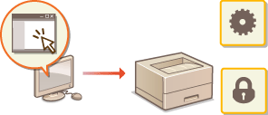

0KXF-035
Mediante un navegador web puede utilizar el equipo de forma remota, consultar los documentos que están a la espera de imprimirse o el estado del equipo. Asimismo, puede configurar la red o realizar otros ajustes en el equipo. El "IU remota" se inicia cuando introduce en su navegador web la dirección IP del equipo. Esto resulta muy práctico pues le permite utilizar el equipo de forma remota sin abandonar su escritorio y sin instalar ninguna aplicación especial.

|
Tareas que puede hacer en el IU remoto
Cómo utilizar el IU remoto
|
Requisitos del sistema
Para utilizar el IU remoto es necesario contar con el siguiente entorno. Además, debe configurar su navegador web para que habilite las cookies.
Windows
Windows XP/Vista/7/8
Microsoft Internet Explorer 7.0 o posterior
Mac OS
Mac OS 10.4 o posterior
Safari 3.2.1 o posterior